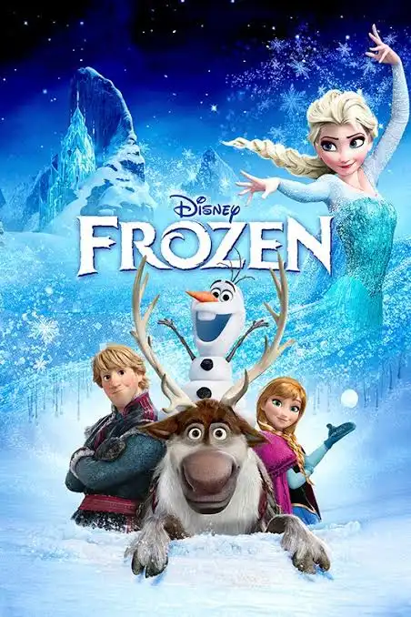

Lilo y stitch/2005
Lilo es una niña hawaiana solitaria que adopta a un perro que en realidad es un extraterrestre travieso que se esconde de unos cazadores intergalácticos.
Frozen/2013
Una profecía condena al reino de Arandelle a vivir en un invierno eterno. La joven Anna, el temerario montañero Kristoff y el reno Sven deben emprender un viaje épico y lleno de aventuras en busca de Elsa, la hermana de Anna y Reina de las Nieves. Ella es la única que puede poner fin al gélido hechizo.

Moana/2016
Vaiana Waialiki es una joven entusiasta del mar y la única hija de un jefe marinero. Cuando los marineros de su aldea no pueden pescar ningún pez y todas las cosechas fallan, Vaiana descubre que el semidiós Maui causó el infortunio después de robar el corazón de la diosa Te Fiti. La única manera de salvar el destino de la isla es persuadiendo a Maui para que le devuelva el corazón a Te Fiti. Entonces, Vaiana emprende una arriesgada aventura para salvar a su aldea junto al semidiós Maui.